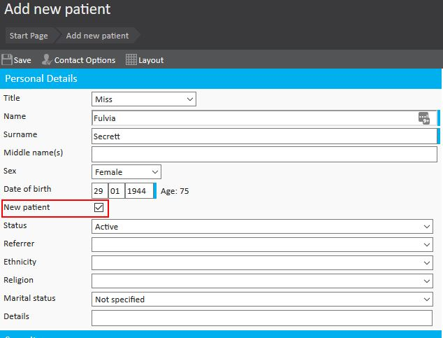
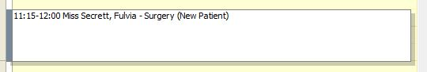
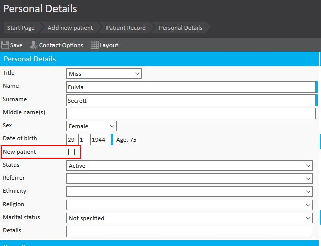

Meddbase allows users to specify that a patient is a 'New Patient' when they are added into their chamber. This will then appear on a Clinicians schedule alongside that patient's first appointment.
This article will detail how to mark a patient as a 'New Patient' and explain how it will appear on a Clinician's schedule.
Within a patient record there is the ability to mark a patient as a ‘New Patient’.

By selecting this box several items happen within Meddbase. Once the patient information is entered and the record is saved will allow for this information to be stored against the patient record.
When the patient has their first appointment booked within the diary it will appear that the Patient is a 'New Patient'.

Once the patient has been marked as 'Arrived' for the appointment the 'New Patient' button becomes unticked.

If the patient does not arrive for the appointment and this is marked in the system, the 'New Patient' will remain ticked until the patient arrives for their first appointment and Meddbase is notified of this.